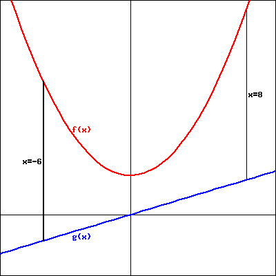

According to U.S. postal regulations, the girth plus the length of a parcel sent by mail may not exceed 108 inches, where by "girth" we mean the perimeter of the smallest end. What is the largest possible volume of a rectangular parcel with a square end that can be sent by mail? Such a package is shown below, with \(x\) and \(y\) measured in inches. Assume \(y>x\text{.}\) What are the dimensions of the package of largest volume?

Find a formula for the volume of the parcel in terms of \(x\) and \(y\text{.}\)
Volume = cubic inches
The problem statement tells us that the parcel’s girth plus length may not exceed 108 inches. In order to maximize volume, we assume that we will actually need the girth plus length to equal 108 inches. What equation does this produce involving \(x\) and \(y\text{?}\)
Equation:
Solve this equation for \(y\) in terms of \(x\text{.}\)
\(y=\)
Find a formula for the volume \(V(x)\) in terms of \(x\text{.}\)
\(V(x) =\) cubic inches
What is the domain of the function \(V\text{?}\) Note that \(x\) must be positive and \(y>x\text{;}\) consider how these facts, and the constraint that girth plus length is 108 inches, limit the possible values for \(x\text{.}\) Give your answer using interval notation.
Domain:
Find the absolute maximum of the volume of the parcel on the domain you established above and hence also determine the dimensions of the box of greatest volume.
Maximum Volume = cubic inches
Optimal dimensions: \(x =\) and \(y =\) inches